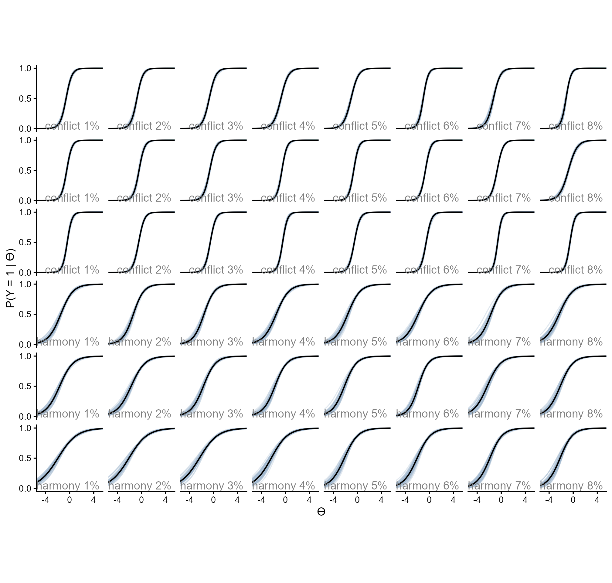
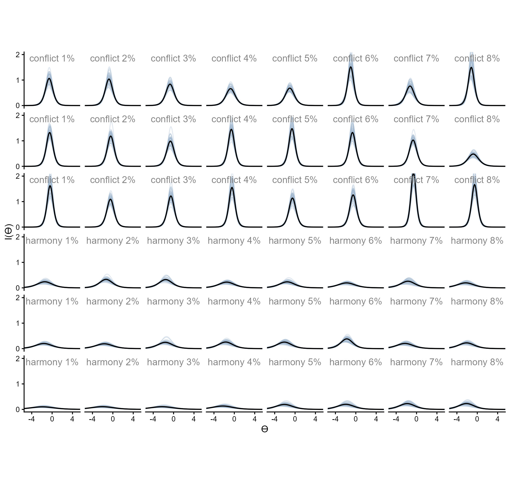

Code
library(tidyverse)
library(rstan)
set_theme(theme_classic(base_size = 16, paper = "#eceadf"))
options(mc.cores = parallel::detectCores())library(tidyverse)
library(rstan)
set_theme(theme_classic(base_size = 16, paper = "#eceadf"))
options(mc.cores = parallel::detectCores())dn_full <- rio::import("https://raw.githubusercontent.com/forecastingresearch/fpt/refs/heads/main/data_cognitive_tasks/task_datasets/data_denominator_neglect.csv")
anchoraig_full <- rio::import("https://raw.githubusercontent.com/forecastingresearch/fpt/refs/heads/main/data_cognitive_tasks/metadata_tables/task_aig_version.csv")anchor_ids_c <- anchoraig_full %>%
filter(task == "denominator_neglect_version_A" |
task == "denominator_neglect_version_B") %>%
mutate(task_version = factor(ifelse(task == "denominator_neglect_version_A", "A", "B"))) %>%
filter(AIG_version == "anchor" & task_version == "B") %>%
pull(session_id)
dn_dat_c <- rio::import("https://raw.githubusercontent.com/forecastingresearch/fpt/refs/heads/main/data_cognitive_tasks/task_datasets/data_denominator_neglect.csv") %>%
arrange(session_id, trial_id) %>%
filter(session_id %in% anchor_ids_c & task_version == "B") %>%
mutate(proportion_difference = abs(left_lottery_gold_prop - right_lottery_gold_prop),
trial_id = paste0("item_", trial_id)) |>
select(-c(session_restart_id, time_elapsed, custom_timer_ended_trial,
trial_index, trial, response, trial_type)) |>
left_join(rio::import("https://raw.githubusercontent.com/forecastingresearch/fpt/refs/heads/main/data_cognitive_tasks/metadata_tables/session.csv"),
by = "session_id") |>
left_join(rio::import("https://raw.githubusercontent.com/forecastingresearch/fpt/refs/heads/main/data_forecasting/processed_data/scores_quantile.csv") |>
select(subject_id, sscore_standardized) |>
summarize(.by = subject_id,
sscore = mean(sscore_standardized)),
by = "subject_id") |>
select(subject_id, trial_id, choice_type, proportion_difference, small_lottery_gold_prop, correct, sscore) |>
mutate(item = str_split_i(trial_id, "_", 2),
.keep = "unused")
saveRDS(dn_dat_c, here::here("Data", "Denominator Neglect", "dn_dat_c.rds"))anchor_ids_s <- anchoraig_full %>%
filter(task == "denominator_neglect_version_A" |
task == "denominator_neglect_version_B") %>%
mutate(task_version = factor(ifelse(task == "denominator_neglect_version_A", "A", "B"))) %>%
filter(AIG_version == "anchor" & task_version == "A") %>%
pull(session_id)
dn_dat_s <- rio::import("https://raw.githubusercontent.com/forecastingresearch/fpt/refs/heads/main/data_cognitive_tasks/task_datasets/data_denominator_neglect.csv") %>%
arrange(session_id, trial_id) %>%
filter(session_id %in% anchor_ids_s & task_version == "A") %>%
mutate(proportion_difference = abs(left_lottery_gold_prop - right_lottery_gold_prop),
trial_id = paste0("item_", trial_id)) |>
select(-c(session_restart_id, time_elapsed, custom_timer_ended_trial,
trial_index, trial, response, trial_type)) |>
left_join(rio::import("https://raw.githubusercontent.com/forecastingresearch/fpt/refs/heads/main/data_cognitive_tasks/metadata_tables/session.csv"),
by = "session_id") |>
left_join(rio::import("https://raw.githubusercontent.com/forecastingresearch/fpt/refs/heads/main/data_forecasting/processed_data/scores_quantile.csv") |>
select(subject_id, sscore_standardized) |>
summarize(.by = subject_id,
sscore = mean(sscore_standardized)),
by = "subject_id") |>
mutate(small_lottery_display_type = ifelse(left_lottery_type == "small",
left_lottery_display_type, right_lottery_display_type),
large_lottery_display_type = ifelse(left_lottery_type == "large",
left_lottery_type, right_lottery_display_type)) |>
select(subject_id, trial_id, choice_type, proportion_difference, small_lottery_gold_prop, , small_lottery_display_type, large_lottery_display_type, correct, sscore) |>
mutate(item = str_split_i(trial_id, "_", 2),
.keep = "unused")
saveRDS(dn_dat_s, here::here("Data", "Denominator Neglect", "dn_dat_s.rds"))Denominator Neglect is a ratio comparison task in which participants choose between lotteries of gold and silver coins. Participants’ goal is to get the most gold coins over the course of the trials and therefore should select the lottery with the highest proportion of gold coins.
The following analysis focuses only on the combined version, “Version B.”
dn.c_wide <- dn_dat_c |>
select(subject_id, item, correct) |>
mutate(item = paste0("item_", item)) |>
pivot_wider(names_from = item, values_from = correct) |>
select(-subject_id) |>
drop_na()dn.c_m <- stan(here::here("Models", "2pl-code.stan"),
data = list(J = nrow(dn.c_wide),
K = ncol(dn.c_wide),
y = dn.c_wide),
chains = 4,
iter = 2500,
seed = 50401)
saveRDS(dn.c_m, here::here("Models", "denominator-neglect-c_2pl.rds"))dn.c_m <- readRDS(here::here("Models", "denominator-neglect-c_2pl.rds"))Probabilities of correct response given difficulty and discrimination estimates and hypothetical \(\theta\) values.
ps.c <- rstan::extract(dn.c_m, c("a", "b")) |>
as.data.frame() |>
mutate(rep = row_number()) |>
filter(rep %in% 1:50) |>
pivot_longer(-rep,
names_to = "item", values_to = "est") |>
separate_wider_delim(item, ".", names = c("param", "item")) |>
pivot_wider(id_cols = c(item, rep),
names_from = param, values_from = est) |>
expand_grid(th = seq(-6, 6, length.out = 100)) |>
mutate(p_1 = exp(a * (th - b)) / (1 + exp(a * (th - b))),
p_0 = 1 - p_1,
info = a^2 * (p_1 * p_0),
choice_type = ifelse(as.numeric(item) <= 24, "conflict", "harmony"))Below are the item response curves.
readRDS(here::here("Figures", "Denominator Neglect", "irc_denominator-neglect.rds"))
And below are the information curves.
readRDS(here::here("Figures", "Denominator Neglect", "ic_denominator-neglect.rds"))
Test information curve
tic.c <- ps.c %>%
summarize(.by = c(rep, th),
test_info = sum(info)) |>
ggplot(aes(x = th, y = test_info, group = rep)) +
geom_line(alpha = .3, color = "slategray3") +
geom_line(data = ps.c |> summarize(.by = c(rep, th),
test_info = sum(info)) |>
summarize(.by = th,
test_info = mean(test_info)),
aes(x = th, y = test_info),
inherit.aes = F, linewidth = .8) +
scale_y_continuous(breaks = c(0, 15, 30)) +
scale_x_continuous(breaks = c(-4, 0, 4)) +
coord_cartesian(xlim = c(-5, 5), ylim = c(0, 35)) +
labs(y = "Test I(ϴ)", x = "ϴ") +
theme_classic(base_size = 14) +
theme(strip.background = element_blank(),
strip.text.x = element_blank())
# saveRDS(tic, here::here("Figures", "Denominator Neglect", "tic.rds"))
tic.c
top_items.c <- data.frame(conf_item = as.numeric(),
harm_item = as.numeric(),
test_info_mean = as.numeric(),
test_info_sd = as.numeric())
for (i in seq(24)) {
top_items.c <- expand_grid(conf_item = ps.c |> filter(choice_type == "conflict") |>
filter(!(item %in% top_items.c$conf_item)) |>
pull(item) |>
unique(),
harm_item = ps.c |> filter(choice_type == "harmony") |>
filter(!(item %in% top_items.c$harm_item)) |>
pull(item) |>
unique()) |>
pmap(\(conf_item, harm_item){
ps.c |>
filter(item == conf_item | item == harm_item |
item %in% top_items.c$conf_item | item %in% top_items.c$harm_item) |>
summarize(.by = c(rep, th),
test_info = sum(info)) |>
summarize(.by = rep,
test_info = sum(test_info)) |>
summarize(rank = i,
conf_item = conf_item,
harm_item = harm_item,
test_info_mean = mean(test_info),
test_info_sd = sd(test_info))
}) |>
list_rbind() |>
filter(test_info_mean == max(test_info_mean)) |>
rbind(top_items.c) |>
arrange(rank)
}
saveRDS(top_items.c, here::here("Data", "Denominator Neglect", "top_items-c.rds"))top_items.c <- readRDS(here::here("Data", "Denominator Neglect", "top_items-c.rds"))
top_items.c |>
ggplot(aes(x = rank, y = test_info_mean / rank)) +
geom_line(alpha = 1, color = "slategray3") +
scale_y_continuous(breaks = c(25, 30)) +
scale_x_continuous(breaks = c(1, 12, 24)) +
#coord_cartesian(xlim = c(-5, 5), ylim = c(0, 30)) +
labs(y = "Test I(ϴ) per Item Pair", x = "Number of Item Pairs") +
theme_classic(base_size = 14) +
theme(strip.background = element_blank(),
strip.text.x = element_blank())
The following analysis focuses only on the separate version, “Version A.”
dn.s_wide <- dn_dat_s |>
select(subject_id, item, correct) |>
mutate(item = paste0("item_", item)) |>
pivot_wider(names_from = item, values_from = correct) |>
select(-subject_id) |>
drop_na()dn.s_m <- stan(here::here("Models", "2pl-code.stan"),
data = list(J = nrow(dn.s_wide),
K = ncol(dn.s_wide),
y = dn.s_wide),
chains = 4,
iter = 2500,
seed = 50401)
saveRDS(dn.s_m, here::here("Models", "denominator-neglect-s_2pl.rds"))dn.s_m <- readRDS(here::here("Models", "denominator-neglect-s_2pl.rds"))Probabilities of correct response given difficulty and discrimination estimates and hypothetical \(\theta\) values.
ps.s <- rstan::extract(dn.s_m, c("a", "b")) |>
as.data.frame() |>
mutate(rep = row_number()) |>
filter(rep %in% 1:50) |>
pivot_longer(-rep,
names_to = "item", values_to = "est") |>
separate_wider_delim(item, ".", names = c("param", "item")) |>
pivot_wider(id_cols = c(item, rep),
names_from = param, values_from = est) |>
expand_grid(th = seq(-6, 6, length.out = 100)) |>
mutate(p_1 = exp(a * (th - b)) / (1 + exp(a * (th - b))),
p_0 = 1 - p_1,
info = a^2 * (p_1 * p_0),
choice_type = ifelse(as.numeric(item) <= 24, "conflict", "harmony"))Below are the item response curves.
readRDS(here::here("Figures", "Denominator Neglect", "irc_denominator-neglect.rds"))
And below are the information curves.
readRDS(here::here("Figures", "Denominator Neglect", "ic_denominator-neglect.rds"))
Test information curve
tic.s <- ps.s %>%
summarize(.by = c(rep, th),
test_info = sum(info)) |>
ggplot(aes(x = th, y = test_info, group = rep)) +
geom_line(alpha = .3, color = "slategray3") +
geom_line(data = ps.s |> summarize(.by = c(rep, th),
test_info = sum(info)) |>
summarize(.by = th,
test_info = mean(test_info)),
aes(x = th, y = test_info),
inherit.aes = F, linewidth = .8) +
scale_y_continuous(breaks = c(0, 15, 30)) +
scale_x_continuous(breaks = c(-4, 0, 4)) +
coord_cartesian(xlim = c(-5, 5), ylim = c(0, 35)) +
labs(y = "Test I(ϴ)", x = "ϴ") +
theme_classic(base_size = 14) +
theme(strip.background = element_blank(),
strip.text.x = element_blank())
# saveRDS(tic, here::here("Figures", "Denominator Neglect", "tic.rds"))
tic.s
top_items.s <- data.frame(conf_item = as.numeric(),
harm_item = as.numeric(),
test_info_mean = as.numeric(),
test_info_sd = as.numeric())
for (i in seq(24)) {
top_items.s <- expand_grid(conf_item = ps.s |> filter(choice_type == "conflict") |>
filter(!(item %in% top_items.s$conf_item)) |>
pull(item) |>
unique(),
harm_item = ps.s |> filter(choice_type == "harmony") |>
filter(!(item %in% top_items.s$harm_item)) |>
pull(item) |>
unique()) |>
pmap(\(conf_item, harm_item){
ps.s |>
filter(item == conf_item | item == harm_item |
item %in% top_items.s$conf_item | item %in% top_items.s$harm_item) |>
summarize(.by = c(rep, th),
test_info = sum(info)) |>
summarize(.by = rep,
test_info = sum(test_info)) |>
summarize(rank = i,
conf_item = conf_item,
harm_item = harm_item,
test_info_mean = mean(test_info),
test_info_sd = sd(test_info))
}) |>
list_rbind() |>
filter(test_info_mean == max(test_info_mean)) |>
rbind(top_items.s) |>
arrange(rank)
}
saveRDS(top_items.s, here::here("Data", "Denominator Neglect", "top_items-s.rds"))top_items.s <- readRDS(here::here("Data", "Denominator Neglect", "top_items-s.rds"))
top_items.c |>
ggplot(aes(x = rank, y = test_info_mean / rank)) +
geom_line(alpha = 1, color = "slategray3") +
scale_y_continuous(breaks = c(25, 30)) +
scale_x_continuous(breaks = c(1, 12, 24)) +
#coord_cartesian(xlim = c(-5, 5), ylim = c(0, 30)) +
labs(y = "Test I(ϴ) per Item Pair", x = "Number of Item Pairs") +
theme_classic(base_size = 14) +
theme(strip.background = element_blank(),
strip.text.x = element_blank())
–>